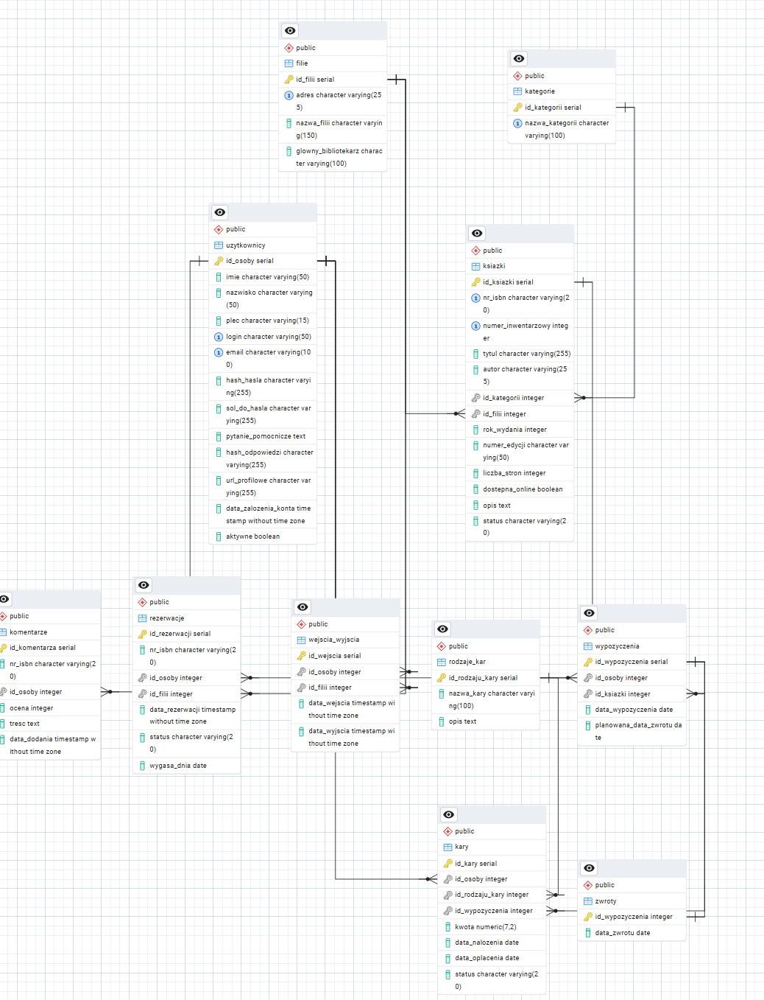

Projekt Zaliczeniowy
Baza danych została zaprojektowana w oparciu o model relacyjny (12 tabel). System obejmuje:
Baza zapewnia spójność danych poprzez:
ALTER TABLE wypozyczenia ADD CONSTRAINT check_planowana_data CHECK (planowana_data_zwrotu >= data_wypozyczenia);
Kompletny model logiczny bazy danych.

Dwa Triggery dbają o to, aby status książki zmieniał się samoczynnie.
Gdy dodajemy rekord do wypozyczenia, trigger fn_after_wypozyczenie_insert zmienia status książki na 'wypożyczony'.
Gdy dodajemy rekord do zwroty, trigger fn_after_zwrot_insert przywraca status na 'dostępny'.
Zastosowano zaawansowany Trigger Walidacyjny, aby zapobiec błędom logicznym w datach pomiędzy różnymi tabelami.
Standardowy CHECK nie może porównywać danych z dwóch różnych tabel (Wypożyczenia vs Zwroty). Jak zablokować zwrot z datą wsteczną?
trg_walidacja_daty_zwrotuIF NEW.data_zwrotu < v_data_wypozyczenia THEN RAISE EXCEPTION 'Błąd: Data zwrotu nie może być wcześniejsza niż data wypożyczenia'; END IF;
Funkcja ta uruchamia się przed każdym wpisem do tabeli Zwroty i blokuje błędne operacje.
Implementacja elementów ułatwiających zarządzanie i analizę danych.
Gotowy raport pokazujący osoby, które przetrzymują książki.
CREATE VIEW view_dluznicy AS SELECT u.imie, u.nazwisko, k.tytul, (CURRENT_DATE - w.planowana_data_zwrotu) as dni_spoznienia FROM wypozyczenia w ... WHERE w.planowana_data_zwrotu < CURRENT_DATE;
Szybkie sprawdzanie dostępności po ISBN.
SELECT czy_ksiazka_dostepna('978-0-317...'); -- Zwraca: TRUE / FALSE
Zastosowano zasadę najmniejszych przywilejów (Least Privilege) poprzez system Ról.
bibliotekarz: Pełny dostęp do zarządzania księgozbiorem i wypożyczeniami.gosc_biblioteki: Ograniczony dostęp tylko do odczytu (SELECT).CREATE ROLE gosc_biblioteki WITH LOGIN PASSWORD 'gosc123'; -- Gość widzi tylko katalog, nie widzi danych osobowych (RODO) GRANT SELECT ON ksiazki, kategorie, filie TO gosc_biblioteki; REVOKE ALL ON uzytkownicy FROM gosc_biblioteki;
Weryfikacja działania automatyzacji (Triggerów).
INSERT INTO wypozyczenia (id_osoby, id_ksiazki, ...) VALUES (1, 1, ...); SELECT status FROM ksiazki WHERE id_ksiazki = 1; -- Wynik: 'wypożyczony' (Sukces)
INSERT INTO zwroty (id_wypozyczenia, data_zwrotu) VALUES (100, '2020-01-01'); -- Data z przeszłości -- Wynik: BŁĄD! Trigger zablokował operację (Sukces)
Wykorzystanie złączeń (JOIN) i agregacji do analizy danych.
SELECT k.nazwa_kategorii, COUNT(w.id_wypozyczenia) as liczba_wypozyczen FROM wypozyczenia w JOIN ksiazki ks ON w.id_ksiazki = ks.id_ksiazki JOIN kategorie k ON ks.id_kategorii = k.id_kategorii GROUP BY k.nazwa_kategorii ORDER BY liczba_wypozyczen DESC LIMIT 5;